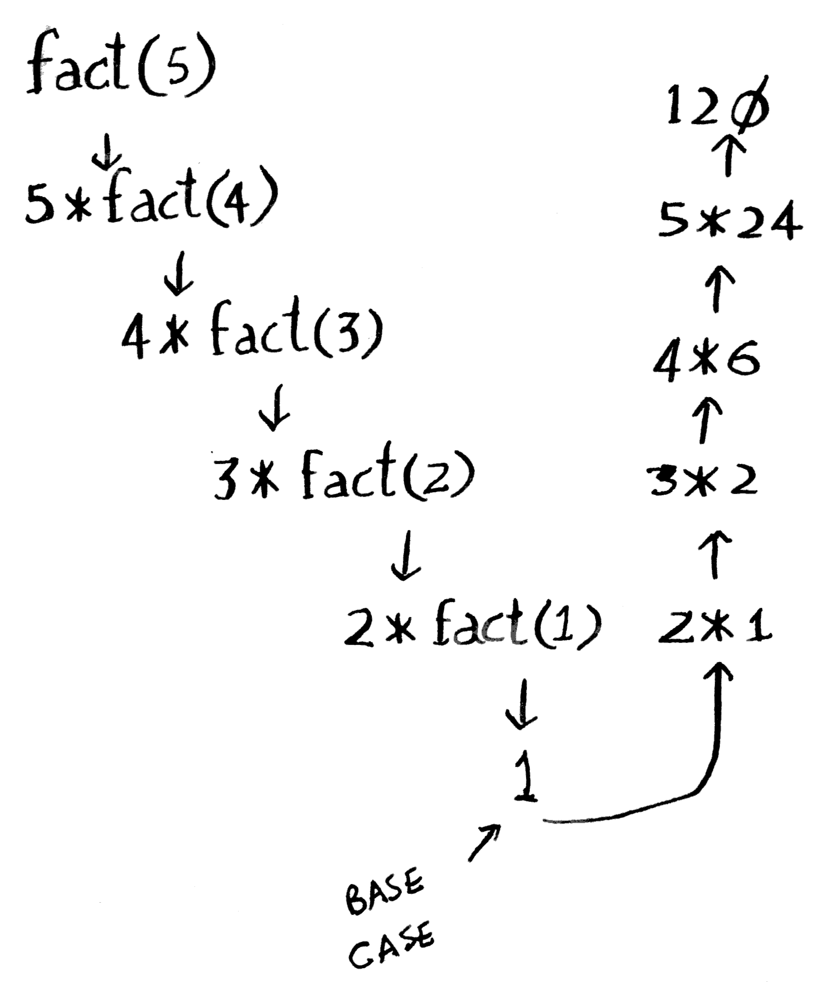

_R_ecursion is a technique by which a function calls itself until a condition is met.
Introduction
Loops or repetitive execution based on certain conditions are inevitable in programs. Usual loops include if, while and for loops. Recursion is an entirely different way to deal with such situations, and in many cases, easier.
Recursion is a when a function calls itself in each iteration till a condition is met. Ideally, the data set in each iteration gets smaller until it reach the required condition, after which the recursive function exists.
A typical example of recursion is a factorial function.
How does Recursion work?
A recursive function ideally contains a Base case and a Recursive case.
A Recursive case is when the function calls itself, until the Base case is met. Each level of iteration in the Recursive case moves the control to the next level.
Once a specific level finishes execution, the control is passed back to the previous level of execution. A Recursive function can go several layers deep until the Base condition is met. In short, a Recursive case is a loop in which the function calls itself.
The Base case is required so that the function doesn’t continue running in the Recursive loop forever. Once the Base case is met, the control moves out of the Recursive case, executes the conditions in the Base case (if any), and exits.
As mentioned in the Introduction, a factorial function can be seen as an example of recursion.
NOTE:
The Base case for a factorial function is when n == 1
Consider n!:
n! can be written as:
n x (n - 1) x (n - 2) x (n - 3) x …. x 1
n! can also be represented as:
[code language=“bash”] n! = n * (n - 1)! —> [Step 1] (n - 1)! = (n - 1) * (n - 2)! —> [Step 2] (n - 2)! = (n - 2) * (n - 3)! —> [Step 3] . .. … (n - (n - 1)) = 1 —> [Base case] [/code]
Each level/step is a product of a value and all the levels below it. Hence, Step 1 will end up moving to Step 2 to get the factorial of elements below it, then to Step 3 and so on.
ie.. the control of execution move as:
[Step 1] -> [Step 2] -> [Step 3] -> ….. [Step n]
In a much easier-to-grasp example, a 5! would be:
[code language=“bash”] 5! = 5 * 4! —> [Step 1] 4! = 4 * 3! —> [Step 2] 3! = 3 * 2! —> [Step 3] 2! = 2 * 1! —> [Step 4] 1! = 1 —> [Step 5] / [Base case] [/code]
The order of execution will be :
[Step 1] -> [Step 2] -> [Step 3] -> [Step 4] -> [Step 5]
As we know, in Recursion, each layer pause itself and pass the control to the next level. Once it reach the end or the Base case, it returns the result back to the previous level one by one until it reaches where it started off.
In this example, once the control of execution reaches Step 5 / Base case , the control is returned back to its previous level Step 4 . This level returns the result back to Step 3 which completes its execution and returns to Step 2 , so on and so forth until it reach Step 1 .
The return control flow would be as:
[Base case / Step 5] -> [Step 4] -> [Step 3] -> [Step 2] -> [Step 1] -> Result.
This can be summed up using an awesome pictorial representation, from the book Grokking Algorithms by Adit. Please check out the References section for the link for more information about this awesome book.

Figure 1: Recursion, Recursive case and Base case (Copyright Manning Publications, drawn by adit.io)
Code
Example 1:
- A
factorialfunction in awhileloop
[code language=“python”] def fact(n): factorial = 1 while n > 1: factorial = factorial * n n = n - 1 return factorial
print(“Factorial of {0} is {1}".format(10, fact(10))) print(“Factorial of {0} is {1}".format(20, fact(20))) [/code]
- The same function above, in a
recursiveloop
[code language=“python”] def factorial(n): if n == 0: return 1 else: return n * factorial(n - 1)
print(“Factorial of {0} is {1}".format(10, factorial(10))) print(“Factorial of {0} is {1}".format(20, factorial(20))) [/code]
Example 2:
- A function to sum numbers in a normal
forloop.
[code language=“python”] def my_sum(my_list): num = 0 for i in my_list: num += i return num
print(my_sum([10, 23, 14, 12, 11, 94, 20])) [/code]
- The same function to add numbers, in a
recursiveloop
[code language=“python”] def my_sum(my_list): if my_list == []: return 0 else: return my_list[0] + my_sum(my_list[1:])
print(my_sum([10, 23, 14, 12, 11, 94, 20])) [/code]
Code explanation
Both Example 1 and Example 2 are represented as an iterative function as well as a recursive function.
The iterative function calls the next() function on the iterator sum.__iter__() magic method iterate over the entire data set. The recursive function calls itself to reach a base case and return the result.
Observations:
While a recursive function does not necessarily give you an edge on performance, it is much easier to understand and the code is cleaner.
Recursion has a disadvantage though, for large data sets. Each loop is put on a call stack until it reaches a Base case. Once the Base case is met, the call stack is rewound back to reach where it started, executing each of the previous levels on the way. The examples above showed a sum function and a factorial function. In large data sets, this can lead to a large call stack which in turns take a lot of memory.